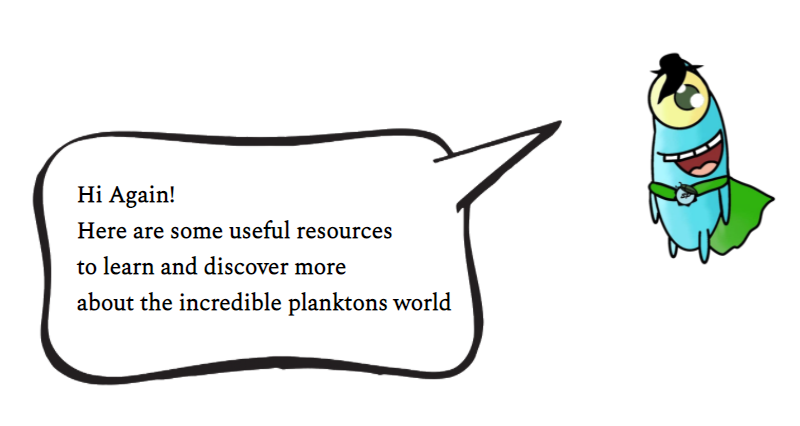

Resources:
- What are Phytoplankton
- Oxygen | UCAR Center for Science Education
- What if the world loses oxygen for five seconds
- Earth’s Oxygen Levels Can Affect Its Climate
- Phytoplankton (Algae) Blooms
- Phytoplankton and nutrients in the oceans
- What Is the Nitrogen Cycle and Why Is It Key to Life?
- Phosphorus Cycle
- Why Are Plankton the Most Vital Organisms on Earth? | BBC Earth
- 'P' is for phosphate: Could urine solve a fertilizer shortage?
- Phytoplankton - A Simple Guide | WHOI
- What are plankton?
- How much oxygen comes from the ocean?
- Why We Should Pay More Attention to Phytoplankton | Reagan Errera | TEDxLSU
- Phytoplankton: Arguably the Most Important Life on Earth
- The Secret Life of Plankton